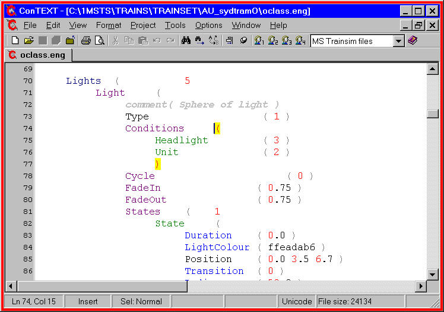

A wonderful feature of ConTEXT is the ability to download and/or write custom highlighter files that can be called from within ConTEXT or can be configured to open with a given file.
If you've perused the screenshot above, you'll see that various keywords inside the ENG file are highlighted in specific colours; even the matched brackets are clearly visible.
Pete Willard wrote a Trainsim Highlighter for ENG and WAG files: I've expanded it to encompass ENG, WAG, SD, CVF, SMS and .CON files as well.
Download MSTS_CTXTv2_1.ZIP, (a 5k file) - this is version 2.1 (released 2 August 2005) of my highlighter. I do not recommend using the MS Highlighter on the ConTEXT webpage as it contains errors in highlighting the Comments section.
Unzip the contents into the /Program Files/ConTEXT/Highlighters folder. Now whenever you open a .ENG, .WAG, .SD, .CVF, .SMS, .CON file using ConTEXT, this highlighter will be utilised.
The highlighter is set to show keywords in different colours, based on the "hierarchy" (for want of a better term) that you normally find them in a MSTS file. The colours are arranged as Navy, Purple, Green, Blue, Teal.
In addition, matched brackets are shown in a red on yellow colour. Comment lines are shown greyed out and italicised.

This provides you with a visual aid to check that the most likely correct keywords are in the right place. A few keywords have been excluded from the highlighter: this is because they appear at different levels in the various MSTS files and the "incorrect" colour" adds to the confusion. These non-highlighted words include Type Position Style Direction.